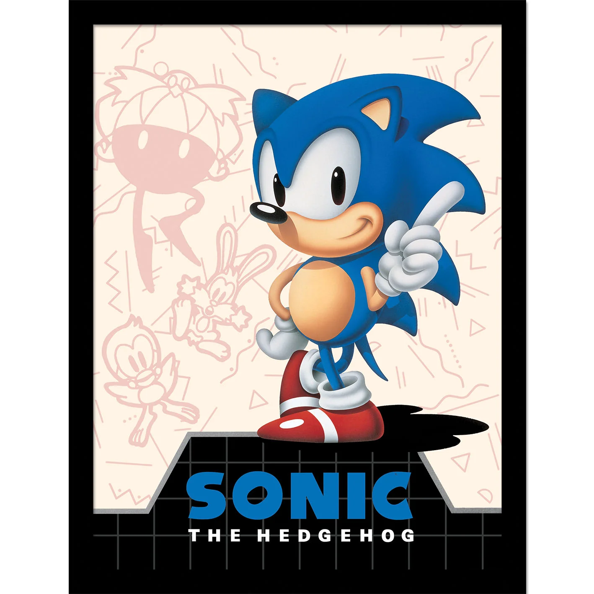
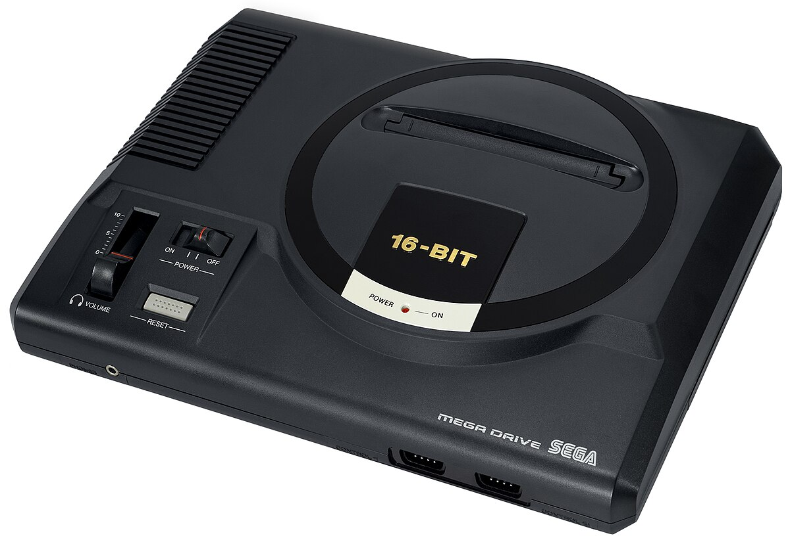

Sega’s 16-Bit Revolution: From Underdog to Console War Challenger
Sega turned the 16-bit era into a battle of speed, attitude, and innovation —
challenging Nintendo’s dominance with the Genesis, Sonic the Hedgehog, and a marketing strategy that spoke
to a generation.
I. Introduction: Sega’s 16-Bit Journey
After struggling with the 8-bit Master System (outmatched by Nintendo’s NES), Sega bet big on 16-bit
hardware — the Mega Drive/Genesis.
Core goal: Redefine itself as the "edgy" alternative, leveraging speed, arcade legacy, and a new mascot
to break Nintendo’s monopoly.
Historical stakes: What began as an underdog’s gamble turned into a global console war that shaped
gaming’s future.
II. Hardware: Engineering for Speed
Genesis’ Technical DNA
Dual-chip power: Motorola 68000 (7.6 MHz) for fast gameplay + Zilog Z80 (3.58 MHz) for Master System
backward compatibility.
Graphics: 512-color palette (64 simultaneous) with sprite scaling/rotation — perfect for Sonic’s
loop-de-loops.
Sound: YM2612 FM synthesis chip, delivering rock-inspired soundtracks (e.g., Streets of Rage).
Expansion Peripherals
Mega CD (1991): CD-ROM support for FMV and larger games (e.g., Sonic CD).
32X (1994): 32-bit upgrade module, though a commercial misstep.
III. Software Ecosystem: Iconic IPs & Arcade Legacy
Sonic the Hedgehog: Mario’s Rival
Designed around Genesis’ speed strengths — blue hedgehog with attitude, bundled with consoles to drive
sales (15M+ copies sold).
Arcade Ports
Streets of Rage: Beat ’em ups with legendary soundtracks.
Mortal Kombat: Uncensored version (blood via code) outperformed SNES.
Golden Axe: Fantasy brawler, direct from Sega’s arcades.
RPG Hits
Phantasy Star IV (1993): Critically acclaimed sci-fi RPG, proving Genesis’ versatility beyond action.

IV. Marketing Warfare: "Genesis Does What Nintendon’t"
Target Audience: Teens Over Families
Aggressive ads positioned Genesis as faster, cooler, and more mature — appealing to 13–25-year-olds.
Direct Comparison
Leveraged Nintendo’s censorship (e.g., sanitized Mortal Kombat) as a weakness, highlighting Genesis’
"uncensored" edge.
Mascot Power
Sonic’s rebellious image stood in stark contrast to Mario’s friendly plumber persona, becoming a cultural
symbol.
North America: Peak 57% market share (1993) — Sonic and teen-focused marketing
drove success.
Europe: Steady growth, aided by localized games and Master System loyalists.
Japan: Struggled — Super Famicom’s brand loyalty and RPG exclusives (e.g., Final
Fantasy) dominated.
Sega’s global strength lay in understanding regional tastes — edgy for North America, family-friendly
enough for Europe, though it never cracked Japan’s Nintendo stronghold.

VI. Legacy: Innovation, Mistakes, and Influence
Industry Impact
Proved Nintendo wasn’t unbeatable — paving the way for Xbox, PlayStation, and future console wars.
Lessons from Failure
Overexpansion: Mega CD/32X confused consumers and spread resources thin.
IP dependency: Relied too heavily on Sonic, lacking Nintendo’s diverse portfolio.
Cultural Resonance
Retro revival: Mini Genesis, Sonic Mania (2017), and chiptune soundtracks keep the era alive.
Sega’s 16-bit attitude defined a generation — proving gaming could be rebellious, fast, and
unapologetically fun.
VII. Conclusion: Sega’s Defining Chapter
Sega’s 16-bit journey was a masterclass in bold risk-taking. Though it never fully dethroned Nintendo, the
Genesis turned Sega from a niche arcade brand into a global household name.
Its legacy isn’t just in hardware or games — it’s in proving that competition drives innovation, and that a
brand with attitude can win the hearts of a generation.